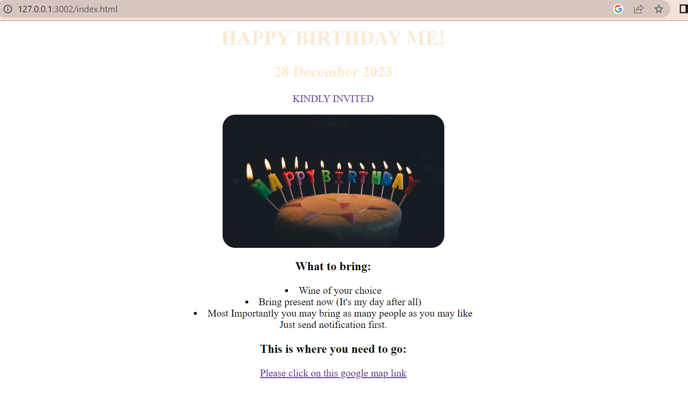

WELCOME TO MY JOURNEY AS A WEBSITE DEVELOPER
In This Website you will discover the project that I have worked on as the website designer
Best Spiritual Food
The below are the top three bible quotes that charge my spirit:
Birthday Invitation

About
Contacts